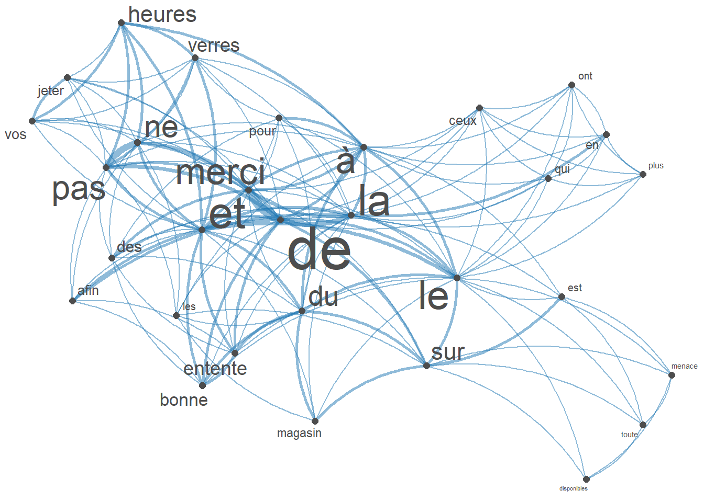
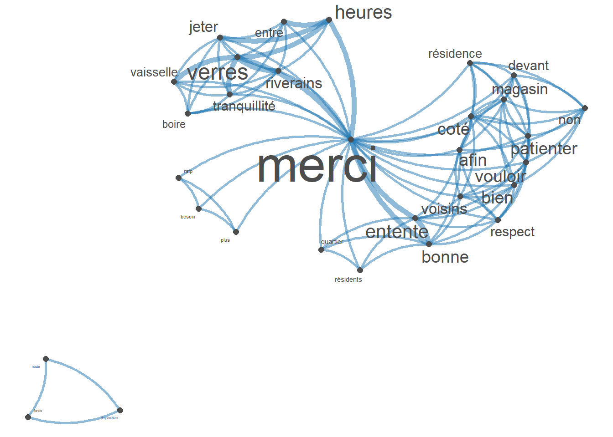
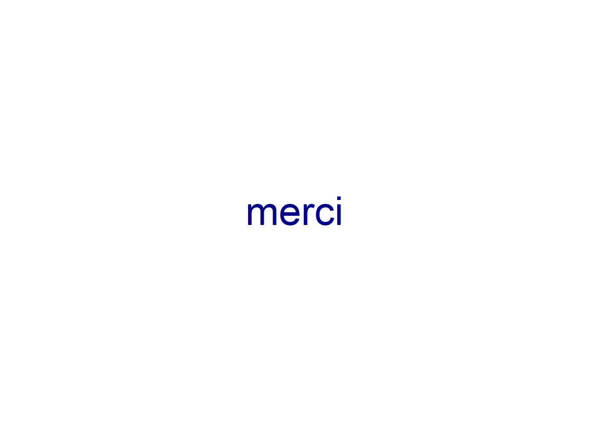

Display code
library(tidyverse)
library(tesseract)
library(quanteda)
library(magick)
library(quanteda.textstats)
library(quanteda.textplots)As part of the seminar, we had to wander in the 13th arrondissement of Paris and take photos of text written on walls, displays, buildings, shops and try to get a sense of multilingualism in the neighborhood.
The course it not about NLP but since that’s what I do, I wanted to profit of the occasion to try new methods, like extracting texts from photos.
The different photos I took are located in the images/photos folder. I searched online and it seems like tesseract is a nice package to do just this. So let’s try it.
library(tidyverse)
library(tesseract)
library(quanteda)
library(magick)
library(quanteda.textstats)
library(quanteda.textplots)setwd("images/photos/")
files <- list.files()
sentence <- list()
tesseract_download("fra")[1] "C:\\Users\\Lucile\\AppData\\Local\\tesseract5\\tesseract5\\tessdata/fra.traineddata"fr <- tesseract("fra")
t1 <- Sys.time()
for (photo in files) {
cat("Photo processing of", photo, "\n")
text <- magick::image_read(photo) %>%
tesseract::ocr_data(engine = fr) %>%
filter(confidence > 50)
sentence[[photo]] <- text
#texts[[photo]] <- bind_rows(texts,texts[[photo]])
}Photo processing of agence.jpg
Photo processing of ascenseur.jpg
Photo processing of porte.jpg
Photo processing of porte2.jpg
Photo processing of poubelle.jpg
Photo processing of poubelle2.jpg
Photo processing of vehicule.jpg
Photo processing of vehicule2.jpg
Photo processing of voisins.jpg
Photo processing of voisins2.jpg Sys.time()-t1Time difference of 13.09726 secsall_texts <- bind_rows(sentence, .id = "n_photo")
#image <- image_read("PXL_20230902_075947721.MP.jpg") %>%
#image_ocr()all_texts <- all_texts %>%
mutate(word = str_replace_all(word, "[[:punct:]]|\\d+|[[:cntrl:]]", ""))
text_df <- all_texts %>%
group_by(n_photo) %>%
summarize(sentence = paste(word, collapse = " "))
text_df# A tibble: 10 × 2
n_photo sentence
<chr> <chr>
1 agence.jpg "AGENCE ENTIÈREMENT AUTOMATISÉE AUCUNS FONDS DISPONIBLES TOUTE…
2 ascenseur.jpg "Ascenseur Merci de la priorité à ceux qui en ont le plus beso…
3 porte.jpg "PORTE AUTOMATIQUE NE PAS POUSSER"
4 porte2.jpg "UNIQUEMENT MERCI DE SORTIR PAR LAUTRE PORTE"
5 poubelle.jpg "ee pS JETER vos PNA ©"
6 poubelle2.jpg "Ne pas déposer miroirs et vitres verres à boire vaisselle P…
7 vehicule.jpg "VÉHICULES PARTAGÉS"
8 vehicule2.jpg "VOITURES Ÿ Ps el"
9 voisins.jpg "à FR Pour le bienêtre du voisinage et là bonne entente des ré…
10 voisins2.jpg "Cher clients clientes Afin de maintenir la bonne entente et l…set.seed(100)
toks <- text_df %>%
pull(sentence) %>%
tokens(remove_punct = TRUE) %>%
tokens_tolower() %>%
tokens_remove("|")
fcmat <- fcm(toks, context = "window", tri = FALSE)
feat <- names(topfeatures(fcmat, 30))
fcm_select(fcmat, pattern = feat) %>%
textplot_network(min_freq = 1, vertex_labelsize = 1.5 * rowSums(.)/min(rowSums(.)))
set.seed(100)
toks <- text_df %>%
pull(sentence) %>%
tokens(remove_punct = TRUE) %>%
tokens_tolower() %>%
tokens_remove(pattern = c(stopwords("french"),"|"), padding = FALSE)
fcmat <- fcm(toks, context = "window", tri = FALSE)
feat <- names(topfeatures(fcmat, 30))
fcm_select(fcmat, pattern = feat) %>%
textplot_network(min_freq = 1, vertex_labelsize = rowSums(.)/min(rowSums(.)))
set.seed(10)
dfmat1 <- dfm(corpus(text_df$sentence),
remove = c(stopwords("french"),"|"), remove_punct = TRUE) %>%
dfm_trim(min_termfreq = 1)
# basic wordcloud
textplot_wordcloud(dfmat1)
text_tokens <- tokens(text_df$sentence, remove_punct = TRUE)
# extract collocations
text_coll <- textstat_collocations(text_tokens, size = 2, min_count = 1)
# inspect
text_coll[1:6, 1:6] collocation count count_nested length lambda z
1 merci de 4 0 2 4.574711 4.326591
2 ne pas 4 0 2 7.904335 3.843734
3 bonne entente 2 0 2 7.329750 3.491720
4 | merci 2 0 2 3.397790 3.435347
5 | | 2 0 2 3.139626 3.282560
6 de ne 2 0 2 3.619200 3.266796